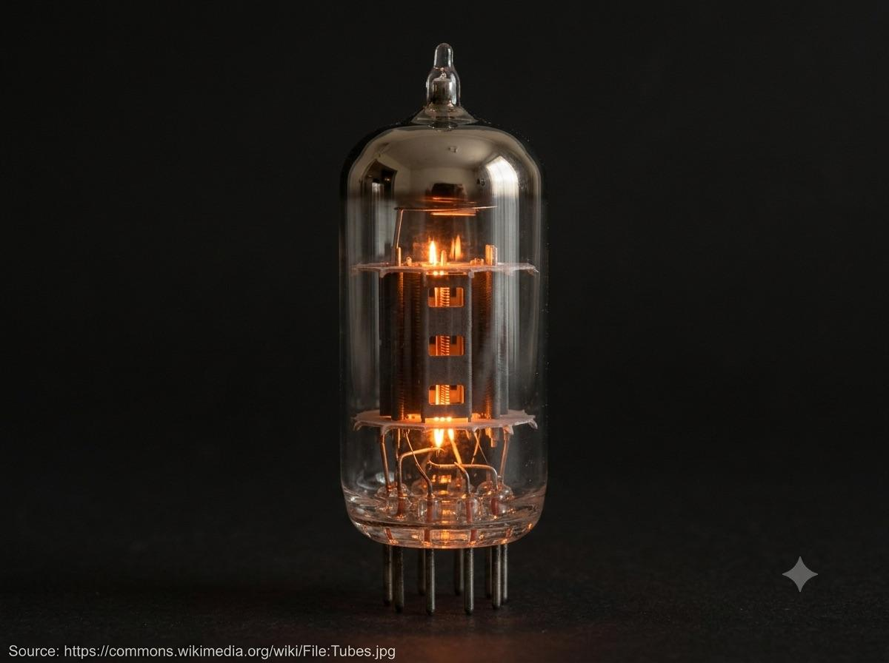

Chapter 06 · A Detour Through History
The Triode
In 1906, Lee de Forest took a simple vacuum-tube diode and dropped a third electrode — the grid — between its two existing ones. The result, which he called the Audion, was the first widely used device that could amplify. Before the transistor, this was how every radio, telephone line, and early computer boosted a signal.
Three electrodes, one valve
| Electrode | Role |
|---|---|
| Cathode | Heated filament; boils electrons off its surface |
| Grid | A fine mesh between cathode and plate; its voltage throttles the electron stream |
| Plate (anode) | Collects the electrons that make it through |

A real photograph (not an illustration) of a glass vacuum-tube triode, glowing orange-amber from its heated filament, with the internal grid and plate visible through the glass, on a plain dark background. Prefer a free-licensed photo from Wikimedia Commons (search "triode vacuum tube"); when dropped in, replace the "Source:" line below with the real Commons file page URL, in small font. Target size ~1200×900px, 4:3, subject centred with safe margins — letterboxed into a 4:3 box.
Generate or source this image, then drop the file here.